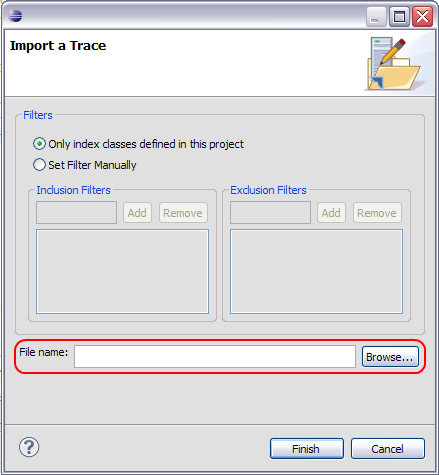
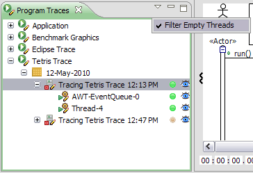
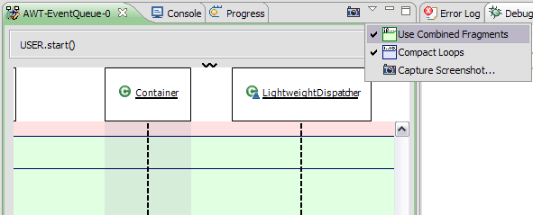
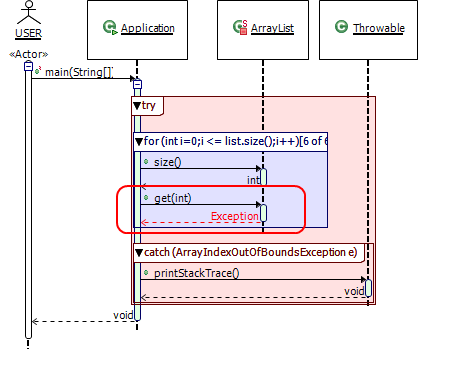
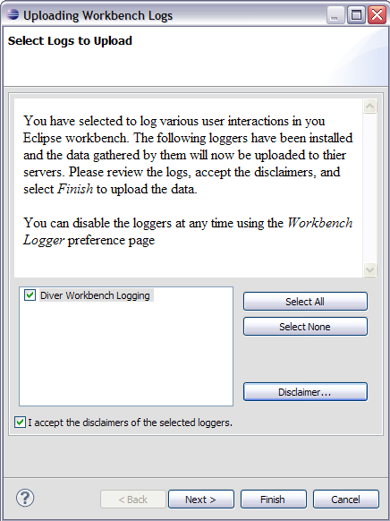

What's New in Diver 0.2.0
| Faster Tracing | The tracer has been optimized. Tests indicate that it is between 2 and 4 times faster than version 0.1.0 |
| Capture Screenshots | You can now save screenshots of your sequence diagram. Select
the "camera" |
| Exporting Traces | Diver is now able to export a complete trace to be shared with your collegues. 
|
| Importing Traces | If you can export, you have to be able to import. Use the import trace wizard to open a Diver Trace (dvt) file. The file will be imported and analyzed just as if you ran the trace yourself.  |
| Filtering Empty Threads | Diver keeps a record for all threads in your traces, even if no events occur in them. In previous versions, this could cause a lot of clutter in the Program Traces view. Now, you can filter empty threads and get rid of the clutter.  |
| Marking Code Executed in Jar Files | In previous versions, it wasn't possible to view executed lines of code in .class files contained in Jars because of limitations in Eclipse's Resource framework. So, I used Diver to figure out how the JDT sets breakpoints in Jar files, and I was able to use what I found to add markers to Jar files for use within Diver. 
|
| Toggle Combied Fragments and Loops | If, for some reason (and I don't know what that would be :-) ), you don't like seeing your sequence diagram decorated with source code information, you can shut of combined fragments and loop compaction.  |
| Exceptions | If a method returns due to an exception, it is now indicated in the sequence diagram.  |
| Diver Research | Diver is a research project at the University of Victoria. Diver now makes it easier for you to help us with our research by logging information about how you use it. You can automatically upload these logs to our server, or you can shut off logging using the Workbench Logger preference page  |
 icon,
and you will be able to save an image of the main pane of the sequence
diagram as a PNG, JPG, or BMP.
icon,
and you will be able to save an image of the main pane of the sequence
diagram as a PNG, JPG, or BMP.